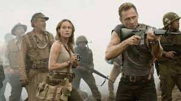
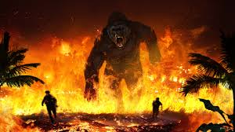
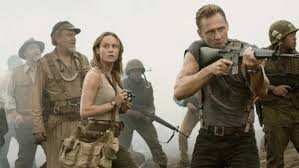
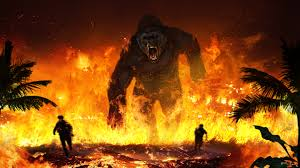

Title
King Kong
Actors
Merian C. Cooper, Edgar Wallace, Leon Gordon
The film was released in 1963
Synopsis
King Kong is a fictional giant monster resembling a gorilla, who has appeared in various media since 1933. He has been dubbed The Eighth Wonder of the World, a phrase commonly used within the films. His first appearance was in the novelization of the 1933 film King Kong from RKO Pictures, with the film premiering a little over two months later. Upon its initial release and subsequent re-releases, the film received universal acclaim. A sequel quickly followed that same year with The Son of Kong, featuring Little Kong. Toho produced King Kong vs. Godzilla (1962) featuring a giant Kong battling Toho's Godzilla and King Kong Escapes (1967), a series loosely based on Rankin/Bass' The King Kong Show (1966-1969). In 1976, Dino De Laurentiis produced a modern remake of the original film directed by John Guillermin. A sequel, King Kong Lives, followed a decade later featuring a Lady Kong. Another remake of the original, this time set in 1933, was released in 2005 from filmmaker Peter Jackson. Kong: Skull Island (2017), set in 1973, is part of Legendary Entertainment's MonsterVerse, which began with Legendary's reboot of Godzilla in 2014. A sequel, Godzilla vs. Kong, once again pitting the characters against one another, was released in March 2021. The character of King Kong has become one of the world's most famous movie icons, having inspired a number of sequels, remakes, spin-offs, imitators, parodies, cartoons, books, comics, video games, theme park rides, and a stage play.[15] His role in the different narratives varies, ranging from a rampaging monster to a tragic antihero.
Age Restriction
16
 


